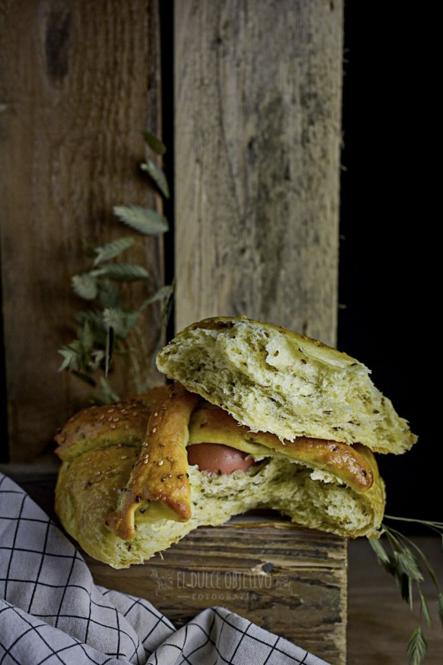

HORNAZOS DE GRANADA
Ingredientes:
- 500 gr. de harina de fuerza.
- 250 ml de agua, mineral y templada.
- 100 ml de aceite de oliva (me gusta usar uno fuerte).
- 10 gr. de azúcar.
- 10 gr. de sal final.
- 20 gr. de levadura fresca de panadería o 7 gr. de levadura seca de panadería.
- 20 gr. de anís en grano o matalauva.
- 1 puñado de pasas (opcional).
- 1 puñado de nueces picadas (opcional).
- 2 huevos para el hornazo.
- 1 huevo para pintar.
- Semillas de sesamo para decorar.
Preparación:
- Lo primero que vamos a preparar es nuestra masa, para ello nos podemos valEr de un robot de cocina tipo Kitchen Aid y su accesorio gancho, o perfectamente lo podemos hacer amasando a mano, si tenemos una buena harina de fuerza, no nos llevará mucho tiempo.
- Tendremos el agua caliente, sin que queme, y disolveremos en ella la levadura.
- Ponemos en el bol la harina, con el azúcar, la sal y el anís en grano y mezclaremos un poco poco.
- En el centro de nuestra harina, vamos a poner la mezcla que tenemos de agua con la levadura y comenzaremos a integrar todo despacio.
- Si lo hacemos con un robot, lo vamos a hacer a la mínima velocidad y si es a mano, pues poco a poco.
- Seguiremos amasando hasta que la masa quede elástica y suave. Comenzará a brillar. En la amasadora, me ha llevado unos 10 minutos a velocidad 1, a manos podemos tartas unos 20 más o menos, pero en mitad del proceso, porque hacer un reposo de unos 10 minutos. Recordemos que en masas, lo reposos amasan.
- Cuando tengamos nuestra masa lista es el momento de añadir las pasas y las nueces (incluso pepitas de chocolate, que se que os gustan) y volveremos a amasar hasta que estén bien repartidas.
- Preparamos un bol engrasado con aceite, voleamos nuestra masa hasta conseguir una bola uniforme y la introducimos dentro de este, tapándola con film.
- Mientras tanto, vamos a preparar los huevos que van a ir en el centro, si bien es cierto que se pueden poner crudos y que se cuezan a la vez que la masa en el horno, yo no he conseguido que me salgan del todo bien, por ello, lo que hago es darles una media cocción en agua hirviendo durante 5 minutos, sacarlos y secarlos, para que se terminen de hacer en el horno después.
- Dejaremos reposar hasta que doble su volumen en un lugar cálido y sin corrientes, esto va a depender de la temperatura y la humedad que haya en nuestra zona. Estos últimos que he preparado han tardado como una hora más o menos el duplicar el volumen.
- Cuando la tengamos lista, sacamos y amasamos ligeramente para desgasificar nuestra masa. Dividiremos nuestra masa en dos, aprox. de unos 450 gr. cada una.
- A su vez, a cada división le vamos a extraer dos porciones de 10 gr. cada una, para elaborar nuestra cruz.
- Preparamos nuestra bandeja de horno con un papel de hornear.
- Voleamos nuestras porciones de masa grandes, formando dos bolas, que pondremos a una distancia prudencial la una de la otra para que no se unan.
- En el centro de la masa y ejerciendo un poco de presión, vamos a colocar nuestros huevos.
- Con las porciones de masa pequeñas, lo que vamos a hacer son dos churros para cruzarlos por encima del huevo y unirlos a la masa. Yo me he humedecido ligeramente los dedos con agua para pegar los extremos a la base central de la masa.
- Con nuestro Hornazo formado, lo que vamos es a taparlos con un paño de cocina, y volver a dejar reposar hasta que dupliquen el volumen. La duración vuelve a depender de la temperatura pero con 1 hora o hora y media me ha bastado.
- Cuando veamos que están casi listos, precalentamos nuestro horno a 220º con calor arriba y abajo.
- Batimos el huevo y pintamos nuestros hornazos con cuidado para que no se bajen.
- Espolvoreamos con semillas de sésamo.
- Metemos en el horno, aproximadamente durante 30 minutos. Que veamos que queda un color bien dorado para que no se queden crudos por dentro pero tampoco se resequen en exceso.
- Sacamos del horno y dejamos enfriar sobre una rejilla.
